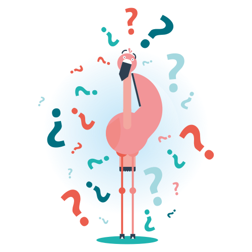

<div class="text-center">
    <div class="row">
        <div class="col-sm-6 ask-group">
            <div class="ask-intro">Comprueba si tu bolsillo está más tieso que la pata de perico</div>
            <div class="ask">¿Cuál crees que es tu nivel de tiesura?</div>
            <input ng-click="goTo('form.vamos')" type="radio" name="percepcion-value" class="input-hidden" ng-model="formData.percepcion" id="percepcion5" value="5"><label for="percepcion5" class="block">No puedo con más tiesura</label>
            <input ng-click="goTo('form.vamos')" type="radio" name="percepcion-value" class="input-hidden" ng-model="formData.percepcion" id="percepcion4" value="4"><label for="percepcion4" class="block">La tiesura aprieta demasiao</label>
            <input ng-click="goTo('form.vamos')" type="radio" name="percepcion-value" class="input-hidden" ng-model="formData.percepcion" id="percepcion3" value="3"><label for="percepcion3" class="block">Tiesura media</label>
            <input ng-click="goTo('form.vamos')" type="radio" name="percepcion-value" class="input-hidden" ng-model="formData.percepcion" id="percepcion2" value="2"><label for="percepcion2" class="block">No me va malamente</label>
            <input ng-click="goTo('form.vamos')" type="radio" name="percepcion-value" class="input-hidden" ng-model="formData.percepcion" id="percepcion1" value="1"><label for="percepcion1" class="block">Estoy en el taco</label>
        </div>
        <div class="col-sm-6 mascota-block hidden-xs">
            
        </div>
    </div>
</div>
